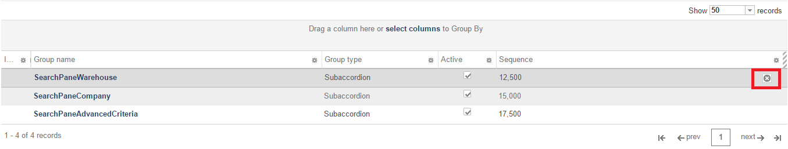

A grid can have an inline delete option enabled that allows users to quickly delete records in the grid. The delete option is represented by the delete button shown in the figure below.

In order to allow inline deleting from a grid, follow these steps.
Step 1: Identify the delete web service call for the grid records
To configure a grid for inline deleting a delete web service must exist for the type of records displayed in the grid. The grid will pass the primary key to the web service. If a web service does not exist you will need to create the appropriate web service logic before configuring this option on the grid.
Step 2: Find the Object Id of the grid
Use the following SQL statement to show all controls for the screen. Browse through the returned records and find the record corresponding to the grid. Insight Architect can also be used for this (How to: Use Insight Architect to Customize a Metadata Page).
| Find the Object Id of Grid |
Copy Code
|
select * from SCREEN_CONTROL where SCREEN_GROUP_ID in (
select OBJECT_ID from SCREEN_GROUP where SCREEN_PART_ID IN (
select OBJECT_ID from SCREEN_PART where SCREEN_ID in (
select OBJECT_ID from MAIN_UI_SCREEN where FORM_ID = <form id>)))
|
Step 3: Create the required screen control attribute records for the grid
Two SCREEN_CONTROL_ATTRIBUTES records need to be created to activate inline deleting in a grid. Insight Architect can also be used for this (How to: Use Insight Architect to Customize a Metadata Page).
| Field |
Value |
| ATTRIBUTE_NAME |
data-restdelete |
| ATTRIBUTE_VALUE |
Web service URL (i.e. /general/scaleapi/shipmentHeaderApi/delete)
|
| SCREEN_CONTROL_ID |
The Screen Control Id of the grid |
| IS_CONTROL_PROPERTY |
Y |
| Field |
Value |
| ATTRIBUTE_NAME |
data-restFormId |
| ATTRIBUTE_VALUE |
The Form Id of record being deleted in the grid. If this attribute is not added, there will be no active security for the delete action.
|
| SCREEN_CONTROL_ID |
The Screen Control Id of the grid |
| IS_CONTROL_PROPERTY |
Y |
Step 4: Create the required screen control event records for the grid
In order to tie the delete action out to another button on the screen (for example, the Save button), the following SCREEN_CONTROL_EVENT and SCREEN_CONTROL_EVENT_PARAMETERS records are required. Insight Architect can also be used for this (How to: Use Insight Architect to Customize a Metadata Page).
| Field |
Value |
| EVENT_ID |
iggridupdatingrowdelete |
| ATTRIBUTE_VALUE |
_webUi.Grid.enableCommitActionForEditableGrid
|
| SCREEN_CONTROL_ID |
The Screen Control Id of the grid |
| Field |
Value |
| PARAMETER_NAME |
CommitSelector |
| PARAMETER_VALUE |
The jQuery selector for the button that should process the delete action for the grid. For example, the Save button on a details screen would be li.menubuttonsave.
|
| SCREEN_CONTROL_EVENT_ID |
The Screen Control Event Id of the event created above |